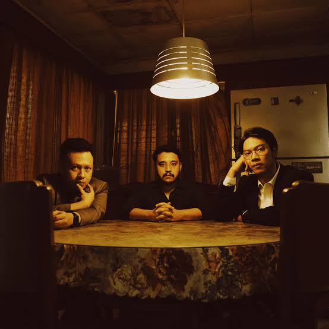

Album perdana penuh narasi tentang dinamika kehidupan pekerja perkotaan, keluarga, dan pencarian makna hidup sehari-hari.
Album • 2022
Rilisan eksploratif yang membawa warna rock kontemporer yang sarat riff bertenaga serta lirik mendalam.
Album • 2025
Pilih lagu dan klik "LYRICS" atau "CHORD" untuk melihat.